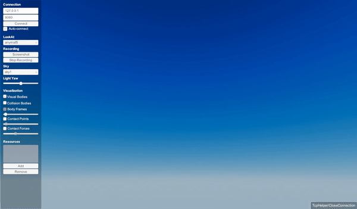

CustomLengthConstraint¶
CustomLengthConstraint allows users to apply any kind of custom constraints.
Users simply set the tension between two points using setTension().
An example of this type of constraints is shown below
auto wire7 = world.addCustomWire(pin7, 0, {0,0,0}, anymalB, 0, {0., 0, 0}, 2.0);
wire7->setTension(400);
The following code will results in
You can find a runnable example in here.
API¶
-
class CustomLengthConstraint : public raisim::LengthConstraint¶
Public Functions
-
void setTension(double tension)¶
set the tension of the wire
- Parameters
tension – the applied tension. If this number is positive, then the force is acting such a way that brings the two objects together
-
void setTension(double tension)¶